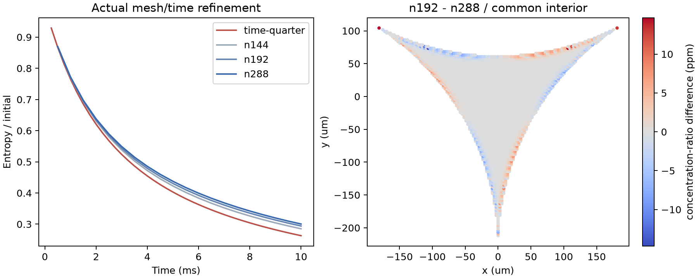

← 封闭截面反馈矩阵REFINEMENT / TARGET NOT YET MET
守恒已通过，
空间精度仍需推进。
新增 4 组、100 步。时间步加密到 .25 ms；空间加密到 n288。守恒、正性与离散能量检查保留，但末两级的场差仍大于预先规定的 1% 目标。
0.610%n96，dt .5 → .25ms，终态自由能差
1.77%n192 → n288，终态自由能差
4.97%同组网格在共同内部点的浓度扰动 L2 差

红线是 n96、dt=.25ms；三条蓝灰线是 n144/192/288、dt=.5ms。因此红蓝曲线同时包含空间差异，不能单独据此判断时间误差。右图只在全部网格共同覆盖的 3,483 个点上比较 c/c*−1，未向网格外外推。矢量 PDF
数值收支通过 ≠ 网格收敛。最细网格终态自由能为初始的 30.044%；此前 n96 半时间步的 26.465% 是该离散层级的结果。共同内部采样也不构成气液边界浓度迹的收敛证明。仍是封闭、固定几何与瞬时 Henry 平衡模型，没有进膜、形变、气体或破裂。
保存字段与对照
结果与未满足的目标 · 预先声明矩阵与源码哈希 · 保存节点独立收支复核 · 边界法向分辨率审计
误差缩小了，但还不够
n144→192 的终态自由能差 2.55%、内部场差 7.23%；n192→288 分别降为 1.77%、4.97%。时间 .5→.25ms 的终态自由能差为 .610%。六项离散求解检查通过，独立读取 CSV 后，总量、自由能与容量正性检查也通过。最细网格的能量收支缺陷 / 初始自由能最大为 2.06×10⁻⁷。
下一项可检验的原因：边界法向分辨率
10ms 的扩散尺度 √(Dt)=2.236μm。n144/192/288 的气液边界相邻三角形高度中位数为 3.45/2.71/1.72μm；n288 仍有约 29.2% 高于这个尺度。保存场的差异主要出现在边界附近，值得测试沿边界法向的局部加密。这个诊断还没有证明误差成因。
原批数据中，迎风项只占黏性+扩散+迎风耗散合计约 0.0047%，因此现有证据不足以把误差主要归咎于迎风耗散。下一步分别控制弧向采样与法向分层，检查浓度边界迹和内部场；在这些门槛明确之前不把此组件作为已验证的真实进液闭合。